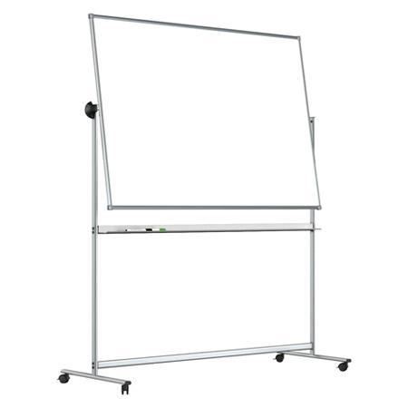
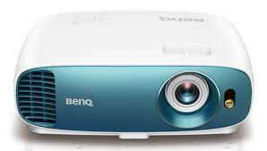
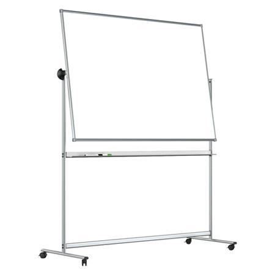
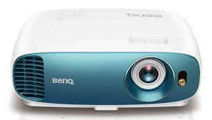

{{ room.name }}
Мест: {{room.seats}}
{{ schedule|get_item:room.id }}
{% if room.board %}  {% endif %} {% if room.projector %}  {% endif %}Мест: {{room.seats}}
{{ schedule|get_item:room.id }}
{% if room.board %}  {% endif %} {% if room.projector %}  {% endif %}